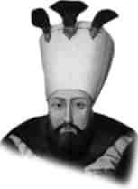

I. MAHMUT
Annesi : Saliha Valide Sultan
Doğumu : 2 Ağustos 1696
Vefatı : 13 Aralık 1754
Saltanatı : 1730 - 1754 (24 yıl)
I. Mahmut küçük yaştan itibaren çok kıymetli hocalardan ilim tahsil etmeye başladı. Çok azimkâr ve sebatkâr bir padişahtı. Devrindeki en değerli kimseleri seçip iş başına getirdi. Padişah olduktan sonra ilk önce Patrona Halil ve maiyetindekiler! ortadan kaldırdı. Üstün karakterli bir şahsiyetti.
“Sebkâti” mahlasıyla şiirleri ve aynı zamanda büyük kıymete haiz besteleri vardı. Devrinde pek çok sadrazam değişmeleri olmuştur. 1750 yılında İstanbul’da hem büyük bir yangın ve hem de zelzele oldu. İstanbul’un büyük camileri hasar gördü ve derhal tamir ettirdi. Yangında dükkân ve evleri yananların zararlarını kendisi karşıladı. Ev ve dükkânları yeniden yaptırıp sahiplerine teslim etti. 1737’de Almanya ile savaşa başlandı. 1739’da Belgrad Antlaşması yapıldı ve Belgrad alındı. İran kesin bir yenilgiye uğratıldı. 1736 yılında İran’la İstanbul Antlaşması yapıldı. Anlaşmadan sonra İranlılar birçok yerleri geri aldılar. Nihayet savaş 1746 yılında sulh yapılarak neticelendi. İranlılar aldıkları yerleri geri verdiler. Caferi Mezhebinin beşinci mezhep olması teklifi bu devirde Osmanlı Devleti tarafından katiyetle reddedildi. I. Mahmut devrinde Osmanlı İmparatorluğu’nun topraklarının genişliği 15. 538. 000 km2 idi.
I. Mahmut, elli sekiz yaşını geçtiği bir sırada vefat etti ve Yeni Camii yanındaki babasının türbesine defnedildi.
Çocuğu yoktu.